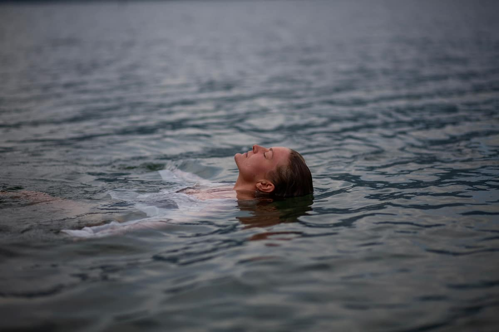
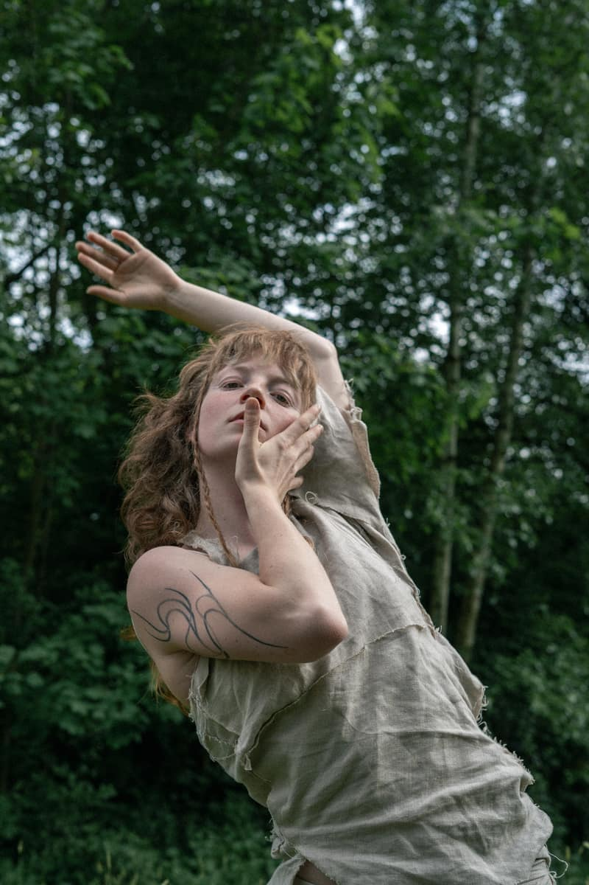

1:1 · online · Kriens
Vom Ich muss zum Ich darf
Du wirst stark in deiner Sanftheit. Das Fühlen wird leichter. Und Bewegung wird zu einer ganz normalen Devotion in deinem Alltag.

Die Energie
Stark in der Sanftheit
Wenn ich mich mit The Water Devotion verbinde, spüre ich fluide Leichtigkeit. Auch wenn wir tief in unsere Gewässer gehen. Wir bringen den Körper in einen Zustand von Effortlessness. Es darf leicht gehen, du darfst fühlen, alles darf da sein.
Oft sind wir oben im Kopf. Hier darfst du ankommen und fragen: Was ist in diesem Moment meine Wahrheit? Und was ist darin mein grösstes Potenzial?
Wasser hat viele Formen. Es geht vom Form ins Formlose.
Und die Stärke darin: Warte nicht, durch dich passiert was.
Was es dir schenkt
Was sich verändert
Dein Körper
Deine Gelenke bekommen Platz, deine Wirbelsäule Bewegung. Manchmal reicht die Hand irgendwo drauf und die Frage: Was brauche ich gerade? Du nimmst zu dir, was in Resonanz ist, nicht mehr schnell, schnell.
Deine Beziehungen
Weniger „du hast das falsch gemacht“, mehr Verständnis und Mitgefühl. Wenn du dir Raum gibst für das, was fliessen möchte, kannst du ihn auch deinem Gegenüber schenken. Wir wollen ja alle in unserer Essenz gesehen werden.
Das Jetzt
Die Schultern, die oben sind, sinken wieder. Du merkst, dass du den Atem anhältst, und atmest aus. Wie weit eigentlich? Kopf, Herz und Bauch sind verbunden, und du reagierst nicht mehr sofort explosiv. Du spürst bewusster, was in dein Feld kommt, oder eben nicht mehr.
Deine Arbeit
Der Körper gibt Signale, die du vorher gekonnt ignoriert hast. Manchmal führt das in eine ganz neue Richtung. Manchmal bleibst du im Job und merkst: Es geht nicht darum, was ich mache, sondern wie.
Dein Ausdruck
Jede Emotion darf durch dich fliessen, ohne Bewertung. Es darf auch mal wehtun, und du tanzt trotzdem mit ihr. Was innen ist, kommt nach aussen.
Ehrlich gesagt
Warum es noch nicht fliesst
Das geht nicht von jetzt auf gleich. Es braucht ein wenig Zeit und Devotion. Je mehr du vom „Ich muss“ ins „Ich darf“ kommst, desto mehr umarmt dich diese Energie.
- Ich muss, ich muss. Jeden Tag aufstehen und funktionieren, weil das System es so will.
- Sicherheit zuerst. In uns allen steckt ein Geschenk für die Welt. Aus Sicherheitsgründen verlieren wir es im System.
- Der Kopf sagt: I can handle it. Der Körper sagt etwas anderes, und die Schultern bleiben oben.
- Gefühle werden bewertet. Gut, schlecht, zu viel. Statt dass sie einfach fliessen dürfen.
Das geht nicht von jetzt auf gleich. Es braucht ein wenig Zeit und Devotion. Je mehr du vom „Ich muss“ ins „Ich darf“ kommst, desto mehr umarmt dich diese Energie.

Warum Wasser
Wasser steht für Vertrauen
Tiefes Vertrauen.
In der Chinesischen Medizin gehört das Wasser zu den Nieren. Dort sitzt, so das Bild, unsere Essenz, die Energie, die wir von Geburt an haben. Alltagsenergie holen wir aus Essen, Atmung und Schlaf. Die Essenz nährt vor allem eines: Ruhe.
Das ist auch mein eigener Prozess. Ich bin mittendrin und sehe den Wert. Aus dem System rauszutanzen fällt mir leicht, und genau dabei begleite ich dich.
Ein traditionelles Bild aus der Chinesischen Medizin, keine medizinische Aussage. Die Arbeit hier ist keine medizinische Behandlung und ersetzt keinen Arztbesuch.

Zum Mitnehmen
30 Sekunden Spinal Waves
Ich sage das allen: Lass deine Wirbelsäule einmal am Tag 30 Sekunden lang in Wellen fliessen. Ohne richtig oder falsch. Und dann schau, wie du durch den Tag gehst.
Wie eine Blüte
Kathi kam ganz versteift, scheu wie ein Mäuschen. Sich bewegen, ohne dass jemand sagt wie? Sie brauchte immer ein Konzept. Kontakt mochte sie, nur wusste sie nicht wie. Im 1:1 hat sie zuerst ihr Selbstvertrauen zurückgewonnen, konnte mehr ausatmen und hat sich in Gruppen getraut. Heute ist sie fast bei jedem Tanzworkshop dabei, und ihrer Energie treu geblieben.
Kathi · 1:1 mit Lucy
Über mich
Hallo, ich bin Lucy
Ich sehe Menschen gut. Was ich sehe, sage ich dir straight, immer als Bestärkung, nie als Fehler. Wenn jemand tanzt, kann ich gar nicht anders, als die Person zu fühlen und ihr Energie zu geben. Manchmal schauen wir uns einfach in die Augen und werden zusammen weich.
In der Kontaktimprovisation heisst das Trickster Energy: hier antippen, da antippen, oh, was macht das? Das bringe ich in den Raum. Öffne dich, probier, beweg dich. Warte nicht, durch dich passiert was.
Aufgewachsen in Hamburg, heute in Luzern. Ich tanze, seit ich klein bin, unterrichte seit ich 16 bin und habe über Freestyle und Fluid Movement zum ZenThai Shiatsu gefunden.
90 Minuten
So läuft ein Treffen ab
- AnkommenWir reden kurz oder gehen direkt in die Bewegung.
- Am BodenEine kleine Reise durch den Körper, angeleitet mit meiner Stimme.
- Fluide ToolsWir vertiefen, was dein Körper gerade lernt.
- Dein ThemaKontaktimprovisation oder ein Thema, das wir im Körper erforschen. Choreos, wenn du magst.
- NourishmentEin sanftes, meditatives Ankommen im Hier und Jetzt, oft mit meinen Händen.
Unsere Zusammenarbeit
The Fluid Self
Vom Kennenlernen zum Ja
- KennenlernenEin kostenloser Video-Call. Wir schauen, wonach sich dein Körper sehnt und ob es passt.
- Du entscheidestIn Ruhe. Bei einem Ja legen wir die sechs Termine fest.
- Drei MonateSechs Treffen, dazwischen deine eigene Praxis.
Fragen
Gut zu wissen
Brauche ich Tanzerfahrung?
Nein, es ist open level. Mit Tanzerfahrung bist du genauso willkommen. Die Arbeit ist experimentell und öffnet Bereiche, die du vielleicht noch nie erfahren hast.
Wie ist das mit Berührung?
Wir gehen ganz langsam ran, ohne Forcieren, je nachdem, wonach dein Körper sich sehnt. Du sagst, was stimmt und wo du nicht berührt werden möchtest. Meist ist es sehr sanft, bis hin dazu, dass du dein ganzes Gewicht abgibst, wenn und wann du das möchtest. Im ersten Treffen wird nichts von dir erwartet.
Online oder vor Ort?
Beides. Im Studio in Kriens (zzgl. CHF 60 Raummiete pro Treffen) oder online.
Was passiert im Kennenlernen?
Ein kostenloser Video-Call, direkt im Kalender buchbar. Wir sprechen über deine Wünsche, wonach sich dein Körper sehnt und welche Themen dran sind. Und wir spüren, ob die Resonanz stimmt und in welchem Rahmen.
Kann ich in Raten zahlen?
Ja, in 3 Raten.
Auf Deutsch oder Englisch?
Ich spreche beides. Welche Sprache für dich passt, klären wir im Kennenlernen.
Stimmen aus der Praxis
Was Teilnehmende spüren
Es darf leicht gehen
Alles liegt offen, Ablauf und Preis. Wenn dich etwas daran bewegt, lass uns einfach sprechen.
Kostenloses Kennenlernen buchen